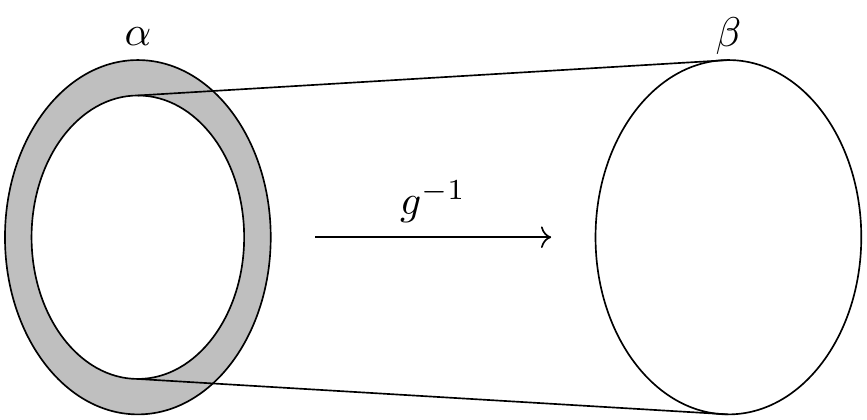
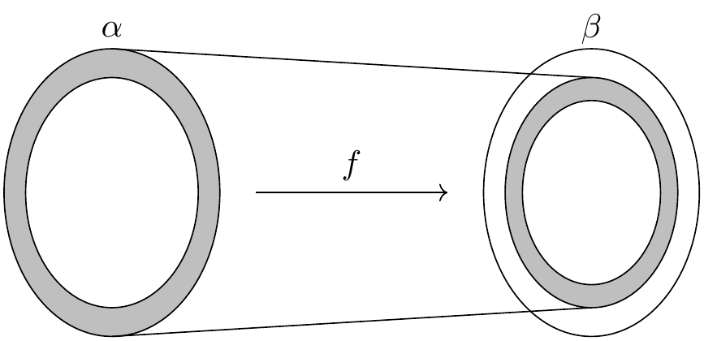

4. Sets and Functions
The vocabulary of sets, relations, and functions provides a uniform language for carrying out constructions in all the branches of mathematics. Since functions and relations can be defined in terms of sets, axiomatic set theory can be used as a foundation for mathematics.
Lean’s foundation is based instead on the primitive notion of a type,
and it includes ways of defining functions between types.
Every expression in Lean has a type:
there are natural numbers, real numbers, functions from reals to reals,
groups, vector spaces, and so on.
Some expressions are types,
which is to say,
their type is Type.
Lean and Mathlib provide ways of defining new types,
and ways of defining objects of those types.
Conceptually, you can think of a type as just a set of objects.
Requiring every object to have a type has some advantages.
For example, it makes it possible to overload notation like +,
and it sometimes makes input less verbose
because Lean can infer a lot of information from
an object’s type.
The type system also enables Lean to flag errors when you
apply a function to the wrong number of arguments,
or apply a function to arguments of the wrong type.
Lean’s library does define elementary set-theoretic notions. In contrast to set theory, in Lean a set is always a set of objects of some type, such as a set of natural numbers or a set of functions from real numbers to real numbers. The distinction between types and sets takes some getting used to, but this chapter will take you through the essentials.
4.1. Sets
If α is any type, the type Set α consists of sets
of elements of α.
This type supports the usual set-theoretic operations and relations.
For example, s ⊆ t says that s is a subset of t,
s ∩ t denotes the intersection of s and t,
and s ∪ t denotes their union.
The subset relation can be typed with \ss or \sub,
intersection can be typed with \i or \cap,
and union can be typed with \un or \cup.
The library also defines the set univ,
which consists of all the elements of type α,
and the empty set, ∅, which can be typed as \empty.
Given x : α and s : Set α,
the expression x ∈ s says that x is a member of s.
Theorems that mention set membership often include mem
in their name.
The expression x ∉ s abbreviates ¬ x ∈ s.
You can type ∈ as \in or \mem and ∉ as \notin.
One way to prove things about sets is to use rw
or the simplifier to expand the definitions.
In the second example below, we use simp only
to tell the simplifier to use only the list
of identities we give it,
and not its full database of identities.
Unlike rw, simp can perform simplifications
inside a universal or existential quantifier.
If you step through the proof,
you can see the effects of these commands.
variable {α : Type*}
variable (s t u : Set α)
open Set
example (h : s ⊆ t) : s ∩ u ⊆ t ∩ u := by
rw [subset_def, inter_def, inter_def]
rw [subset_def] at h
simp only [mem_setOf]
rintro x ⟨xs, xu⟩
exact ⟨h _ xs, xu⟩
example (h : s ⊆ t) : s ∩ u ⊆ t ∩ u := by
simp only [subset_def, mem_inter_iff] at *
rintro x ⟨xs, xu⟩
exact ⟨h _ xs, xu⟩
In this example, we open the set namespace to have
access to the shorter names for the theorems.
But, in fact, we can delete the calls to rw and simp
entirely:
example (h : s ⊆ t) : s ∩ u ⊆ t ∩ u := by
intro x xsu
exact ⟨h xsu.1, xsu.2⟩
What is going on here is known as definitional reduction:
to make sense of the intro command and the anonymous constructors
Lean is forced to expand the definitions.
The following example also illustrate the phenomenon:
example (h : s ⊆ t) : s ∩ u ⊆ t ∩ u :=
fun x ⟨xs, xu⟩ ↦ ⟨h xs, xu⟩
To deal with unions, we can use Set.union_def and Set.mem_union.
Since x ∈ s ∪ t unfolds to x ∈ s ∨ x ∈ t,
we can also use the cases tactic to force a definitional reduction.
example : s ∩ (t ∪ u) ⊆ s ∩ t ∪ s ∩ u := by
intro x hx
have xs : x ∈ s := hx.1
have xtu : x ∈ t ∪ u := hx.2
rcases xtu with xt | xu
· left
show x ∈ s ∩ t
exact ⟨xs, xt⟩
· right
show x ∈ s ∩ u
exact ⟨xs, xu⟩
Since intersection binds tighter than union,
the use of parentheses in the expression (s ∩ t) ∪ (s ∩ u)
is unnecessary, but they make the meaning of the expression clearer.
The following is a shorter proof of the same fact:
example : s ∩ (t ∪ u) ⊆ s ∩ t ∪ s ∩ u := by
rintro x ⟨xs, xt | xu⟩
· left; exact ⟨xs, xt⟩
· right; exact ⟨xs, xu⟩
As an exercise, try proving the other inclusion:
example : s ∩ t ∪ s ∩ u ⊆ s ∩ (t ∪ u) := by
sorry
It might help to know that when using rintro,
sometimes we need to use parentheses around a disjunctive pattern
h1 | h2 to get Lean to parse it correctly.
The library also defines set difference, s \ t,
where the backslash is a special unicode character
entered as \\.
The expression x ∈ s \ t expands to x ∈ s ∧ x ∉ t.
(The ∉ can be entered as \notin.)
It can be rewritten manually using Set.diff_eq and dsimp
or Set.mem_diff,
but the following two proofs of the same inclusion
show how to avoid using them.
example : (s \ t) \ u ⊆ s \ (t ∪ u) := by
intro x xstu
have xs : x ∈ s := xstu.1.1
have xnt : x ∉ t := xstu.1.2
have xnu : x ∉ u := xstu.2
constructor
· exact xs
intro xtu
-- x ∈ t ∨ x ∈ u
rcases xtu with xt | xu
· show False; exact xnt xt
· show False; exact xnu xu
example : (s \ t) \ u ⊆ s \ (t ∪ u) := by
rintro x ⟨⟨xs, xnt⟩, xnu⟩
use xs
rintro (xt | xu) <;> contradiction
As an exercise, prove the reverse inclusion:
example : s \ (t ∪ u) ⊆ (s \ t) \ u := by
sorry
To prove that two sets are equal,
it suffices to show that every element of one is an element
of the other.
This principle is known as “extensionality,”
and, unsurprisingly,
the ext tactic is equipped to handle it.
example : s ∩ t = t ∩ s := by
ext x
simp only [mem_inter_iff]
constructor
· rintro ⟨xs, xt⟩; exact ⟨xt, xs⟩
· rintro ⟨xt, xs⟩; exact ⟨xs, xt⟩
Once again, deleting the line simp only [mem_inter_iff]
does not harm the proof.
In fact, if you like inscrutable proof terms,
the following one-line proof is for you:
example : s ∩ t = t ∩ s :=
Set.ext fun x ↦ ⟨fun ⟨xs, xt⟩ ↦ ⟨xt, xs⟩, fun ⟨xt, xs⟩ ↦ ⟨xs, xt⟩⟩
Here is an even shorter proof, using the simplifier:
example : s ∩ t = t ∩ s := by ext x; simp [and_comm]
An alternative to using ext is to use
the theorem Subset.antisymm
which allows us to prove an equation s = t
between sets by proving s ⊆ t and t ⊆ s.
example : s ∩ t = t ∩ s := by
apply Subset.antisymm
· rintro x ⟨xs, xt⟩; exact ⟨xt, xs⟩
· rintro x ⟨xt, xs⟩; exact ⟨xs, xt⟩
Try finishing this proof term:
example : s ∩ t = t ∩ s :=
Subset.antisymm sorry sorry
Remember that you can replace sorry by an underscore, and when you hover over it, Lean will show you what it expects at that point.
Here are some set-theoretic identities you might enjoy proving:
example : s ∩ (s ∪ t) = s := by
sorry
example : s ∪ s ∩ t = s := by
sorry
example : s \ t ∪ t = s ∪ t := by
sorry
example : s \ t ∪ t \ s = (s ∪ t) \ (s ∩ t) := by
sorry
When it comes to representing sets,
here is what is going on underneath the hood.
In type theory, a property or predicate on a type α
is just a function P : α → Prop.
This makes sense:
given a : α, P a is just the proposition
that P holds of a.
In the library, Set α is defined to be α → Prop and x ∈ s is defined to be s x.
In other words, sets are really properties, treated as objects.
The library also defines set-builder notation.
The expression { y | P y } unfolds to (fun y ↦ P y),
so x ∈ { y | P y } reduces to P x.
So we can turn the property of being even into the set of even numbers:
def evens : Set ℕ :=
{ n | Even n }
def odds : Set ℕ :=
{ n | ¬Even n }
example : evens ∪ odds = univ := by
rw [evens, odds]
ext n
simp [-Nat.not_even_iff_odd]
apply Classical.em
You should step through this proof and make sure
you understand what is going on.
Note we tell the simplifier to not use the lemma
Nat.not_even_iff because we want to keep
¬ Even n in our goal.
Try deleting the line rw [evens, odds]
and confirm that the proof still works.
In fact, set-builder notation is used to define
s ∩ tas{x | x ∈ s ∧ x ∈ t},s ∪ tas{x | x ∈ s ∨ x ∈ t},∅as{x | False}, andunivas{x | True}.
We often need to indicate the type of ∅ and univ
explicitly,
because Lean has trouble guessing which ones we mean.
The following examples show how Lean unfolds the last
two definitions when needed. In the second one,
trivial is the canonical proof of True in the library.
example (x : ℕ) (h : x ∈ (∅ : Set ℕ)) : False :=
h
example (x : ℕ) : x ∈ (univ : Set ℕ) :=
trivial
As an exercise, prove the following inclusion.
Use intro n to unfold the definition of subset,
and use the simplifier to reduce the
set-theoretic constructions to logic.
We also recommend using the theorems
Nat.Prime.eq_two_or_odd and Nat.odd_iff.
example : { n | Nat.Prime n } ∩ { n | n > 2 } ⊆ { n | ¬Even n } := by
sorry
Be careful: it is somewhat confusing that the library has multiple versions
of the predicate Prime.
The most general one makes sense in any commutative monoid with a zero element.
The predicate Nat.Prime is specific to the natural numbers.
Fortunately, there is a theorem that says that in the specific case,
the two notions agree, so you can always rewrite one to the other.
#print Prime
#print Nat.Prime
example (n : ℕ) : Prime n ↔ Nat.Prime n :=
Nat.prime_iff.symm
example (n : ℕ) (h : Prime n) : Nat.Prime n := by
rw [Nat.prime_iff]
exact h
The rwa tactic follows a rewrite with the assumption tactic.
example (n : ℕ) (h : Prime n) : Nat.Prime n := by
rwa [Nat.prime_iff]
Lean introduces the notation ∀ x ∈ s, ...,
“for every x in s .,”
as an abbreviation for ∀ x, x ∈ s → ....
It also introduces the notation ∃ x ∈ s, ...,
“there exists an x in s such that ..”
These are sometimes known as bounded quantifiers,
because the construction serves to restrict their significance
to the set s.
As a result, theorems in the library that make use of them
often contain ball or bex in the name.
The theorem bex_def asserts that ∃ x ∈ s, ... is equivalent
to ∃ x, x ∈ s ∧ ...,
but when they are used with rintro, use,
and anonymous constructors,
these two expressions behave roughly the same.
As a result, we usually don’t need to use bex_def
to transform them explicitly.
Here is are some examples of how they are used:
variable (s t : Set ℕ)
example (h₀ : ∀ x ∈ s, ¬Even x) (h₁ : ∀ x ∈ s, Prime x) : ∀ x ∈ s, ¬Even x ∧ Prime x := by
intro x xs
constructor
· apply h₀ x xs
apply h₁ x xs
example (h : ∃ x ∈ s, ¬Even x ∧ Prime x) : ∃ x ∈ s, Prime x := by
rcases h with ⟨x, xs, _, prime_x⟩
use x, xs
See if you can prove these slight variations:
section
variable (ssubt : s ⊆ t)
example (h₀ : ∀ x ∈ t, ¬Even x) (h₁ : ∀ x ∈ t, Prime x) : ∀ x ∈ s, ¬Even x ∧ Prime x := by
sorry
example (h : ∃ x ∈ s, ¬Even x ∧ Prime x) : ∃ x ∈ t, Prime x := by
sorry
end
Indexed unions and intersections are
another important set-theoretic construction.
We can model a sequence \(A_0, A_1, A_2, \ldots\) of sets of
elements of α
as a function A : ℕ → Set α,
in which case ⋃ i, A i denotes their union,
and ⋂ i, A i denotes their intersection.
There is nothing special about the natural numbers here,
so ℕ can be replaced by any type I
used to index the sets.
The following illustrates their use.
variable {α I : Type*}
variable (A B : I → Set α)
variable (s : Set α)
open Set
example : (s ∩ ⋃ i, A i) = ⋃ i, A i ∩ s := by
ext x
simp only [mem_inter_iff, mem_iUnion]
constructor
· rintro ⟨xs, ⟨i, xAi⟩⟩
exact ⟨i, xAi, xs⟩
rintro ⟨i, xAi, xs⟩
exact ⟨xs, ⟨i, xAi⟩⟩
example : (⋂ i, A i ∩ B i) = (⋂ i, A i) ∩ ⋂ i, B i := by
ext x
simp only [mem_inter_iff, mem_iInter]
constructor
· intro h
constructor
· intro i
exact (h i).1
intro i
exact (h i).2
rintro ⟨h1, h2⟩ i
constructor
· exact h1 i
exact h2 i
Parentheses are often needed with an indexed union or intersection because, as with the quantifiers, the scope of the bound variable extends as far as it can.
Try proving the following identity.
One direction requires classical logic!
We recommend using by_cases xs : x ∈ s
at an appropriate point in the proof.
example : (s ∪ ⋂ i, A i) = ⋂ i, A i ∪ s := by
sorry
Mathlib also has bounded unions and intersections,
which are analogous to the bounded quantifiers.
You can unpack their meaning with mem_iUnion₂
and mem_iInter₂.
As the following examples show,
Lean’s simplifier carries out these replacements as well.
def primes : Set ℕ :=
{ x | Nat.Prime x }
example : (⋃ p ∈ primes, { x | p ^ 2 ∣ x }) = { x | ∃ p ∈ primes, p ^ 2 ∣ x } :=by
ext
rw [mem_iUnion₂]
simp
example : (⋃ p ∈ primes, { x | p ^ 2 ∣ x }) = { x | ∃ p ∈ primes, p ^ 2 ∣ x } := by
ext
simp
example : (⋂ p ∈ primes, { x | ¬p ∣ x }) ⊆ { x | x = 1 } := by
intro x
contrapose!
simp
apply Nat.exists_prime_and_dvd
Try solving the following example, which is similar.
If you start typing eq_univ,
tab completion will tell you that apply eq_univ_of_forall
is a good way to start the proof.
We also recommend using the theorem Nat.exists_infinite_primes.
example : (⋃ p ∈ primes, { x | x ≤ p }) = univ := by
sorry
Give a collection of sets, s : Set (Set α),
their union, ⋃₀ s, has type Set α
and is defined as {x | ∃ t ∈ s, x ∈ t}.
Similarly, their intersection, ⋂₀ s, is defined as
{x | ∀ t ∈ s, x ∈ t}.
These operations are called sUnion and sInter, respectively.
The following examples show their relationship to bounded union
and intersection.
variable {α : Type*} (s : Set (Set α))
example : ⋃₀ s = ⋃ t ∈ s, t := by
ext x
rw [mem_iUnion₂]
simp
example : ⋂₀ s = ⋂ t ∈ s, t := by
ext x
rw [mem_iInter₂]
rfl
In the library, these identities are called
sUnion_eq_biUnion and sInter_eq_biInter.
4.2. Functions
If f : α → β is a function and p is a set of
elements of type β,
the library defines preimage f p, written f ⁻¹' p,
to be {x | f x ∈ p}.
The expression x ∈ f ⁻¹' p reduces to f x ∈ p.
This is often convenient, as in the following example:
variable {α β : Type*}
variable (f : α → β)
variable (s t : Set α)
variable (u v : Set β)
open Function
open Set
example : f ⁻¹' (u ∩ v) = f ⁻¹' u ∩ f ⁻¹' v := by
ext
rfl
If s is a set of elements of type α,
the library also defines image f s,
written f '' s,
to be {y | ∃ x, x ∈ s ∧ f x = y}.
So a hypothesis y ∈ f '' s decomposes to a triple
⟨x, xs, xeq⟩ with x : α satisfying the hypotheses xs : x ∈ s
and xeq : f x = y.
The rfl tag in the rintro tactic (see Section 3.2) was made precisely
for this sort of situation.
example : f '' (s ∪ t) = f '' s ∪ f '' t := by
ext y; constructor
· rintro ⟨x, xs | xt, rfl⟩
· left
use x, xs
right
use x, xt
rintro (⟨x, xs, rfl⟩ | ⟨x, xt, rfl⟩)
· use x, Or.inl xs
use x, Or.inr xt
Notice also that the use tactic applies rfl
to close goals when it can.
Here is another example:
example : s ⊆ f ⁻¹' (f '' s) := by
intro x xs
show f x ∈ f '' s
use x, xs
We can replace the line use x, xs by
apply mem_image_of_mem f xs if we want to
use a theorem specifically designed for that purpose.
But knowing that the image is defined in terms
of an existential quantifier is often convenient.
The following equivalence is a good exercise:
example : f '' s ⊆ v ↔ s ⊆ f ⁻¹' v := by
sorry
It shows that image f and preimage f are
an instance of what is known as a Galois connection
between Set α and Set β,
each partially ordered by the subset relation.
In the library, this equivalence is named
image_subset_iff.
In practice, the right-hand side is often the
more useful representation,
because y ∈ f ⁻¹' t unfolds to f y ∈ t
whereas working with x ∈ f '' s requires
decomposing an existential quantifier.
Here is a long list of set-theoretic identities for you to enjoy. You don’t have to do all of them at once; do a few of them, and set the rest aside for a rainy day.
example (h : Injective f) : f ⁻¹' (f '' s) ⊆ s := by
sorry
example : f '' (f ⁻¹' u) ⊆ u := by
sorry
example (h : Surjective f) : u ⊆ f '' (f ⁻¹' u) := by
sorry
example (h : s ⊆ t) : f '' s ⊆ f '' t := by
sorry
example (h : u ⊆ v) : f ⁻¹' u ⊆ f ⁻¹' v := by
sorry
example : f ⁻¹' (u ∪ v) = f ⁻¹' u ∪ f ⁻¹' v := by
sorry
example : f '' (s ∩ t) ⊆ f '' s ∩ f '' t := by
sorry
example (h : Injective f) : f '' s ∩ f '' t ⊆ f '' (s ∩ t) := by
sorry
example : f '' s \ f '' t ⊆ f '' (s \ t) := by
sorry
example : f ⁻¹' u \ f ⁻¹' v ⊆ f ⁻¹' (u \ v) := by
sorry
example : f '' s ∩ v = f '' (s ∩ f ⁻¹' v) := by
sorry
example : f '' (s ∩ f ⁻¹' u) ⊆ f '' s ∩ u := by
sorry
example : s ∩ f ⁻¹' u ⊆ f ⁻¹' (f '' s ∩ u) := by
sorry
example : s ∪ f ⁻¹' u ⊆ f ⁻¹' (f '' s ∪ u) := by
sorry
You can also try your hand at the next group of exercises,
which characterize the behavior of images and preimages
with respect to indexed unions and intersections.
In the third exercise, the argument i : I is needed
to guarantee that the index set is nonempty.
To prove any of these, we recommend using ext or intro
to unfold the meaning of an equation or inclusion between sets,
and then calling simp to unpack the conditions for membership.
variable {I : Type*} (A : I → Set α) (B : I → Set β)
example : (f '' ⋃ i, A i) = ⋃ i, f '' A i := by
sorry
example : (f '' ⋂ i, A i) ⊆ ⋂ i, f '' A i := by
sorry
example (i : I) (injf : Injective f) : (⋂ i, f '' A i) ⊆ f '' ⋂ i, A i := by
sorry
example : (f ⁻¹' ⋃ i, B i) = ⋃ i, f ⁻¹' B i := by
sorry
example : (f ⁻¹' ⋂ i, B i) = ⋂ i, f ⁻¹' B i := by
sorry
The library defines a predicate InjOn f s to say that
f is injective on s.
It is defined as follows:
example : InjOn f s ↔ ∀ x₁ ∈ s, ∀ x₂ ∈ s, f x₁ = f x₂ → x₁ = x₂ :=
Iff.refl _
The statement Injective f is provably equivalent
to InjOn f univ.
Similarly, the library defines range f to be
{x | ∃y, f y = x},
so range f is provably equal to f '' univ.
This is a common theme in Mathlib:
although many properties of functions are defined relative
to their full domain,
there are often relativized versions that restrict
the statements to a subset of the domain type.
Here is are some examples of InjOn and range in use:
open Set Real
example : InjOn log { x | x > 0 } := by
intro x xpos y ypos
intro e
-- log x = log y
calc
x = exp (log x) := by rw [exp_log xpos]
_ = exp (log y) := by rw [e]
_ = y := by rw [exp_log ypos]
example : range exp = { y | y > 0 } := by
ext y; constructor
· rintro ⟨x, rfl⟩
apply exp_pos
intro ypos
use log y
rw [exp_log ypos]
Try proving these:
example : InjOn sqrt { x | x ≥ 0 } := by
sorry
example : InjOn (fun x ↦ x ^ 2) { x : ℝ | x ≥ 0 } := by
sorry
example : sqrt '' { x | x ≥ 0 } = { y | y ≥ 0 } := by
sorry
example : (range fun x ↦ x ^ 2) = { y : ℝ | y ≥ 0 } := by
sorry
To define the inverse of a function f : α → β,
we will use two new ingredients.
First, we need to deal with the fact that
an arbitrary type in Lean may be empty.
To define the inverse to f at y when there is
no x satisfying f x = y,
we want to assign a default value in α.
Adding the annotation [Inhabited α] as a variable
is tantamount to assuming that α has a
preferred element, which is denoted default.
Second, in the case where there is more than one x
such that f x = y,
the inverse function needs to choose one of them.
This requires an appeal to the axiom of choice.
Lean allows various ways of accessing it;
one convenient method is to use the classical choose
operator, illustrated below.
variable {α β : Type*} [Inhabited α]
#check (default : α)
variable (P : α → Prop) (h : ∃ x, P x)
#check Classical.choose h
example : P (Classical.choose h) :=
Classical.choose_spec h
Given h : ∃ x, P x, the value of Classical.choose h
is some x satisfying P x.
The theorem Classical.choose_spec h says that Classical.choose h
meets this specification.
With these in hand, we can define the inverse function as follows:
noncomputable section
open Classical
def inverse (f : α → β) : β → α := fun y : β ↦
if h : ∃ x, f x = y then Classical.choose h else default
theorem inverse_spec {f : α → β} (y : β) (h : ∃ x, f x = y) : f (inverse f y) = y := by
rw [inverse, dif_pos h]
exact Classical.choose_spec h
The lines noncomputable section and open Classical
are needed because we are using classical logic in an essential way.
On input y, the function inverse f
returns some value of x satisfying f x = y if there is one,
and a default element of α otherwise.
This is an instance of a dependent if construction,
since in the positive case, the value returned,
Classical.choose h, depends on the assumption h.
The identity dif_pos h rewrites if h : e then a else b
to a given h : e,
and, similarly, dif_neg h rewrites it to b given h : ¬ e.
There are also versions if_pos and if_neg that works for non-dependent
if constructions and will be used in the next section.
The theorem inverse_spec says that inverse f
meets the first part of this specification.
Don’t worry if you do not fully understand how these work.
The theorem inverse_spec alone should be enough to show
that inverse f is a left inverse if and only if f is injective
and a right inverse if and only if f is surjective.
Look up the definition of LeftInverse and RightInverse
by double-clicking or right-clicking on them in VS Code,
or using the commands #print LeftInverse and #print RightInverse.
Then try to prove the two theorems.
They are tricky!
It helps to do the proofs on paper before
you start hacking through the details.
You should be able to prove each of them with about a half-dozen
short lines.
If you are looking for an extra challenge,
try to condense each proof to a single-line proof term.
variable (f : α → β)
open Function
example : Injective f ↔ LeftInverse (inverse f) f :=
sorry
example : Surjective f ↔ RightInverse (inverse f) f :=
sorry
We close this section with a type-theoretic statement of Cantor’s famous theorem that there is no surjective function from a set to its power set. See if you can understand the proof, and then fill in the two lines that are missing.
theorem Cantor : ∀ f : α → Set α, ¬Surjective f := by
intro f surjf
let S := { i | i ∉ f i }
rcases surjf S with ⟨j, h⟩
have h₁ : j ∉ f j := by
intro h'
have : j ∉ f j := by rwa [h] at h'
contradiction
have h₂ : j ∈ S
sorry
have h₃ : j ∉ S
sorry
contradiction
4.3. The Schröder-Bernstein Theorem
We close this chapter with an elementary but nontrivial theorem of set theory. Let \(\alpha\) and \(\beta\) be sets. (In our formalization, they will actually be types.) Suppose \(f : \alpha → \beta\) and \(g : \beta → \alpha\) are both injective. Intuitively, this means that \(\alpha\) is no bigger than \(\beta\) and vice-versa. If \(\alpha\) and \(\beta\) are finite, this implies that they have the same cardinality, which is equivalent to saying that there is a bijection between them. In the nineteenth century, Cantor stated that same result holds even in the case where \(\alpha\) and \(\beta\) are infinite. This was eventually established by Dedekind, Schröder, and Bernstein independently.
Our formalization will introduce some new methods that we will explain in greater detail in chapters to come. Don’t worry if they go by too quickly here. Our goal is to show you that you already have the skills to contribute to the formal proof of a real mathematical result.
To understand the idea behind the proof, consider the image of the map \(g\) in \(\alpha\). On that image, the inverse of \(g\) is defined and is a bijection with \(\beta\).
{kind=link}
The problem is that the bijection does not include the shaded region in the diagram, which is nonempty if \(g\) is not surjective. Alternatively, we can use \(f\) to map all of \(\alpha\) to \(\beta\), but in that case the problem is that if \(f\) is not surjective, it will miss some elements of \(\beta\).
{kind=link}
But now consider the composition \(g \circ f\) from \(\alpha\) to itself. Because the composition is injective, it forms a bijection between \(\alpha\) and its image, yielding a scaled-down copy of \(\alpha\) inside itself.

This composition maps the inner shaded ring to yet another such set, which we can think of as an even smaller concentric shaded ring, and so on. This yields a concentric sequence of shaded rings, each of which is in bijective correspondence with the next. If we map each ring to the next and leave the unshaded parts of \(\alpha\) alone, we have a bijection of \(\alpha\) with the image of \(g\). Composing with \(g^{-1}\), this yields the desired bijection between \(\alpha\) and \(\beta\).
We can describe this bijection more simply. Let \(A\) be the union of the sequence of shaded regions, and define \(h : \alpha \to \beta\) as follows:
In other words, we use \(f\) on the shaded parts, and we use the inverse of \(g\) everywhere else. The resulting map \(h\) is injective because each component is injective and the images of the two components are disjoint. To see that it is surjective, suppose we are given a \(y\) in \(\beta\), and consider \(g(y)\). If \(g(y)\) is in one of the shaded regions, it cannot be in the first ring, so we have \(g(y) = g(f(x))\) for some \(x\) is in the previous ring. By the injectivity of \(g\), we have \(h(x) = f(x) = y\). If \(g(y)\) is not in the shaded region, then by the definition of \(h\), we have \(h(g(y))= y\). Either way, \(y\) is in the image of \(h\).
This argument should sound plausible, but the details are delicate. Formalizing the proof will not only improve our confidence in the result, but also help us understand it better. Because the proof uses classical logic, we tell Lean that our definitions will generally not be computable.
noncomputable section
open Classical
variable {α β : Type*} [Nonempty β]
The annotation [Nonempty β] specifies that β is nonempty.
We use it because the Mathlib primitive that we will use to
construct \(g^{-1}\) requires it.
The case of the theorem where \(\beta\) is empty is trivial,
and even though it would not be hard to generalize the formalization to cover
that case as well, we will not bother.
Specifically, we need the hypothesis [Nonempty β] for the operation
invFun that is defined in Mathlib.
Given x : α, invFun g x chooses a preimage of x
in β if there is one,
and returns an arbitrary element of β otherwise.
The function invFun g is always a left inverse if g is injective
and a right inverse if g is surjective.
#check (invFun g : α → β)
#check (leftInverse_invFun : Injective g → LeftInverse (invFun g) g)
#check (leftInverse_invFun : Injective g → ∀ y, invFun g (g y) = y)
#check (invFun_eq : (∃ y, g y = x) → g (invFun g x) = x)
We define the set corresponding to the union of the shaded regions as follows.
variable (f : α → β) (g : β → α)
def sbAux : ℕ → Set α
| 0 => univ \ g '' univ
| n + 1 => g '' (f '' sbAux n)
def sbSet :=
⋃ n, sbAux f g n
The definition sbAux is an example of a recursive definition,
which we will explain in the next chapter.
It defines a sequence of sets
The definition sbSet corresponds to the set
\(A = \bigcup_{n \in \mathbb{N}} S_n\) in our proof sketch.
The function \(h\) described above is now defined as follows:
def sbFun (x : α) : β :=
if x ∈ sbSet f g then f x else invFun g x
We will need the fact that our definition of \(g^{-1}\) is a
right inverse on the complement of \(A\),
which is to say, on the non-shaded regions of \(\alpha\).
This is so because the outermost ring, \(S_0\), is equal to
\(\alpha \setminus g(\beta)\), so the complement of \(A\) is
contained in \(g(\beta)\).
As a result, for every \(x\) in the complement of \(A\),
there is a \(y\) such that \(g(y) = x\).
(By the injectivity of \(g\), this \(y\) is unique,
but next theorem says only that invFun g x returns some y
such that g y = x.)
Step through the proof below, make sure you understand what is going on,
and fill in the remaining parts.
You will need to use invFun_eq at the end.
Notice that rewriting with sbAux here replaces sbAux f g 0
with the right-hand side of the corresponding defining equation.
theorem sb_right_inv {x : α} (hx : x ∉ sbSet f g) : g (invFun g x) = x := by
have : x ∈ g '' univ := by
contrapose! hx
rw [sbSet, mem_iUnion]
use 0
rw [sbAux, mem_diff]
sorry
have : ∃ y, g y = x := by
sorry
sorry
We now turn to the proof that \(h\) is injective. Informally, the proof goes as follows. First, suppose \(h(x_1) = h(x_2)\). If \(x_1\) is in \(A\), then \(h(x_1) = f(x_1)\), and we can show that \(x_2\) is in \(A\) as follows. If it isn’t, then we have \(h(x_2) = g^{-1}(x_2)\). From \(f(x_1) = h(x_1) = h(x_2)\) we have \(g(f(x_1)) = x_2\). From the definition of \(A\), since \(x_1\) is in \(A\), \(x_2\) is in \(A\) as well, a contradiction. Hence, if \(x_1\) is in \(A\), so is \(x_2\), in which case we have \(f(x_1) = h(x_1) = h(x_2) = f(x_2)\). The injectivity of \(f\) then implies \(x_1 = x_2\). The symmetric argument shows that if \(x_2\) is in \(A\), then so is \(x_1\), which again implies \(x_1 = x_2\).
The only remaining possibility is that neither \(x_1\) nor \(x_2\) is in \(A\). In that case, we have \(g^{-1}(x_1) = h(x_1) = h(x_2) = g^{-1}(x_2)\). Applying \(g\) to both sides yields \(x_1 = x_2\).
Once again, we encourage you to step through the following proof
to see how the argument plays out in Lean.
See if you can finish off the proof using sb_right_inv.
theorem sb_injective (hf : Injective f) : Injective (sbFun f g) := by
set A := sbSet f g with A_def
set h := sbFun f g with h_def
intro x₁ x₂
intro (hxeq : h x₁ = h x₂)
show x₁ = x₂
simp only [h_def, sbFun, ← A_def] at hxeq
by_cases xA : x₁ ∈ A ∨ x₂ ∈ A
· wlog x₁A : x₁ ∈ A generalizing x₁ x₂ hxeq xA
· symm
apply this hxeq.symm xA.symm (xA.resolve_left x₁A)
have x₂A : x₂ ∈ A := by
apply _root_.not_imp_self.mp
intro (x₂nA : x₂ ∉ A)
rw [if_pos x₁A, if_neg x₂nA] at hxeq
rw [A_def, sbSet, mem_iUnion] at x₁A
have x₂eq : x₂ = g (f x₁) := by
sorry
rcases x₁A with ⟨n, hn⟩
rw [A_def, sbSet, mem_iUnion]
use n + 1
simp [sbAux]
exact ⟨x₁, hn, x₂eq.symm⟩
sorry
push_neg at xA
sorry
The proof introduces some new tactics.
To start with, notice the set tactic, which introduces abbreviations
A and h for sbSet f g and sb_fun f g respectively.
We name the corresponding defining equations A_def and h_def.
The abbreviations are definitional, which is to say, Lean will sometimes
unfold them automatically when needed.
But not always; for example, when using rw, we generally need to
use A_def and h_def explicitly.
So the definitions bring a tradeoff: they can make expressions shorter
and more readable, but they sometimes require us to do more work.
A more interesting tactic is the wlog tactic, which encapsulates
the symmetry argument in the informal proof above.
We will not dwell on it now, but notice that it does exactly what we want.
If you hover over the tactic you can take a look at its documentation.
The argument for surjectivity is even easier. Given \(y\) in \(\beta\), we consider two cases, depending on whether \(g(y)\) is in \(A\). If it is, it can’t be in \(S_0\), the outermost ring, because by definition that is disjoint from the image of \(g\). Thus it is an element of \(S_{n+1}\) for some \(n\). This means that it is of the form \(g(f(x))\) for some \(x\) in \(S_n\). By the injectivity of \(g\), we have \(f(x) = y\). In the case where \(g(y)\) is in the complement of \(A\), we immediately have \(h(g(y))= y\), and we are done.
Once again, we encourage you to step through the proof and fill in
the missing parts.
The tactic rcases n with _ | n splits on the cases g y ∈ sbAux f g 0
and g y ∈ sbAux f g (n + 1).
In both cases, calling the simplifier with simp [sbAux]
applies the corresponding defining equation of sbAux.
theorem sb_surjective (hg : Injective g) : Surjective (sbFun f g) := by
set A := sbSet f g with A_def
set h := sbFun f g with h_def
intro y
by_cases gyA : g y ∈ A
· rw [A_def, sbSet, mem_iUnion] at gyA
rcases gyA with ⟨n, hn⟩
rcases n with _ | n
· simp [sbAux] at hn
simp [sbAux] at hn
rcases hn with ⟨x, xmem, hx⟩
use x
have : x ∈ A := by
rw [A_def, sbSet, mem_iUnion]
exact ⟨n, xmem⟩
simp only [h_def, sbFun, if_pos this]
exact hg hx
sorry
We can now put it all together. The final statement is short and sweet,
and the proof uses the fact that Bijective h unfolds to
Injective h ∧ Surjective h.
theorem schroeder_bernstein {f : α → β} {g : β → α} (hf : Injective f) (hg : Injective g) :
∃ h : α → β, Bijective h :=
⟨sbFun f g, sb_injective f g hf, sb_surjective f g hg⟩